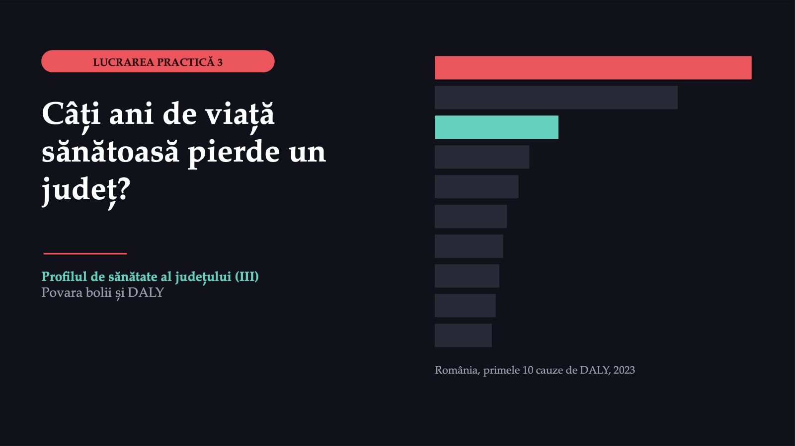
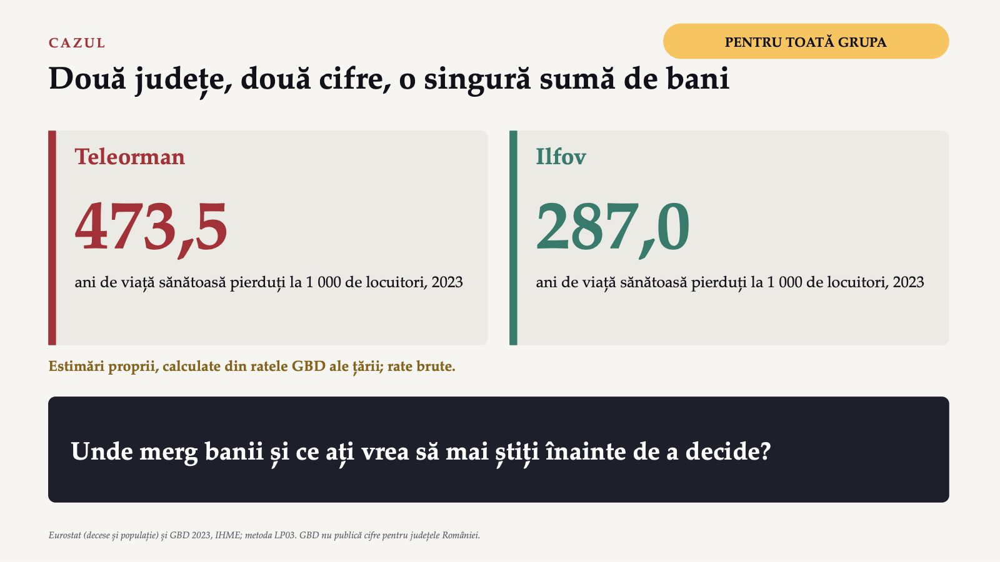
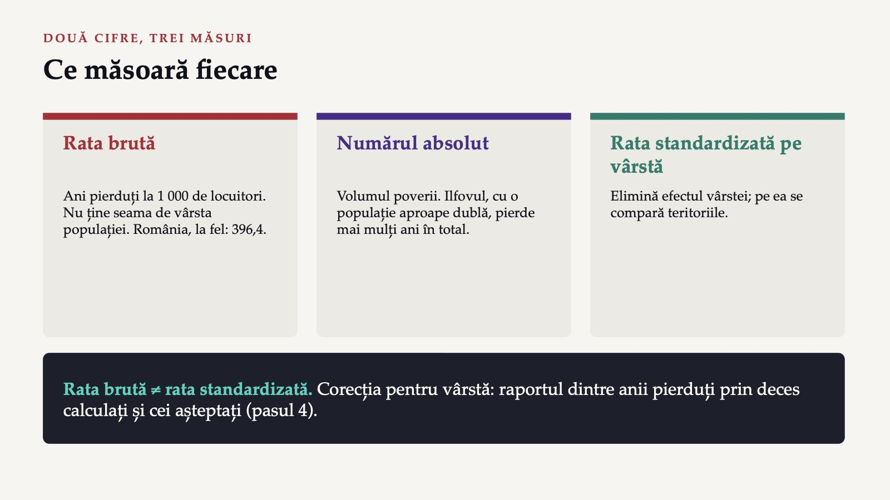
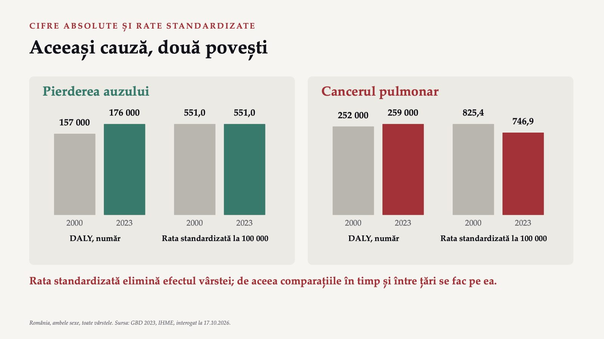
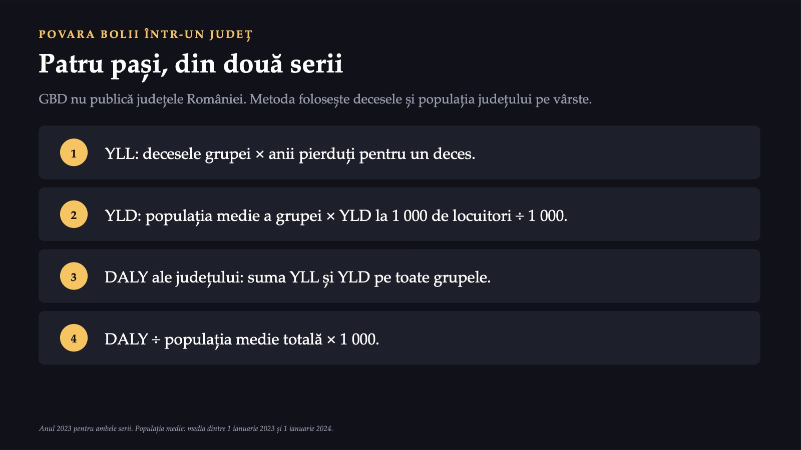
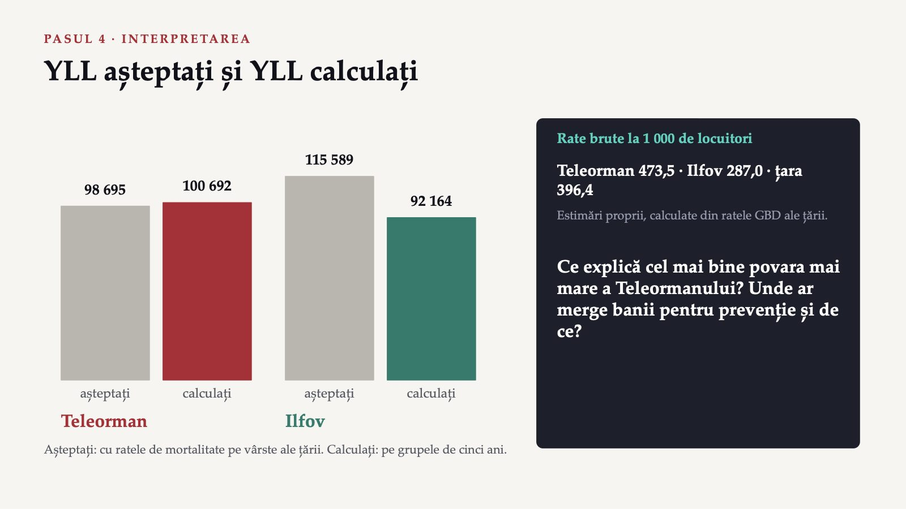
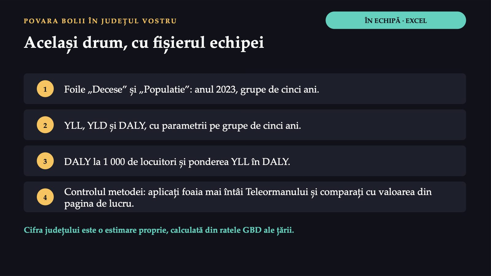

Câți ani de viață sănătoasă pierde un județ?

1 / 23473,5

2 / 23Ce măsoară fiecare

3 / 23Rata brută arată câți ani pierde, în medie, un locuitor, dar nu ține seama de vârsta populației. Numărul absolut arată volumul poverii și câte servicii trebuie plătite. Pentru cele două județe, corecția pentru vârstă o face pasul al patrulea al exercițiului, prin raportul dintre anii pierduți prin deces calculați și cei așteptați.
YLL
![ANII DE VIAȚĂ AJUSTAȚI PENTRU DIZABILITATE DALY = YLL + YLD YLL Anii pierduți prin deces prematur. Fiecare deces se înmulțește cu speranța de viață prezisă la vârsta decesului, pornind de la o speranță de viață teoretică „cea mai bună”, globală, aceeași pentru ambele sexe. YLD Anii trăiți cu boală, cântăriți după gravitatea ei. Prevalența fiecărei consecințe a bolii se înmulțește cu ponderea dizabilității ei. Un DALY este un an de sănătate deplină pierdut. Un deces la o vârstă tânără cântărește mai mult decât unul la o vârstă înaintată.](diapozitive/LP03/004.jpg) 4 / 23
4 / 23Un DALY reprezintă pierderea echivalentului unui an de sănătate deplină. Pentru o boală, DALY este suma a doi termeni: anii de viață pierduți prin deces prematur și anii de viață sănătoasă pierduți prin dizabilitate.
Vârstnicii unui județ, într-un singur an
![UN EXEMPLU CU DATE REALE Vârstnicii unui județ, într-un singur an Teleorman, 70 de ani și peste, 2023: decese și populație reale (Eurostat); rezultatul, estimare proprie din ratele GBD ale țării. YLL 3 917 decese × 13,3 ani pierduți pentru un deces = 52 096,1 decese × ani pierduți pentru un deces YLD 59 730 de persoane × 281,7 ÷ 1 000 = 16 825,9 populația × YLD la 1 000 ÷ 1 000 DALY 52 096,1 + 16 825,9 = 68 922,0 ani de viață sănătoasă pierduți YLL + YLD Surse: Eurostat; GBD 2023, IHME; metoda LP03.](diapozitive/LP03/005.jpg) 5 / 23
5 / 23România în GBD Compare
![ÎN INSTRUMENT DEMONSTRAȚIE · GBD COMPARE România în GBD Compare 1 Locația: România. Anul: 2023 sau 2000. 2 Măsura: DALY. Unitatea: număr, procent din total sau rată la 100 000 de locuitori. 3 Vârsta și sexul: toate vârstele și ambele sexe, apoi pe rând grupe de vârstă și fiecare sex. 4 Trei vizualizări: diagrama cu dreptunghiuri, diagrama cu bare, evoluția în timp. 5 Exportul: datele afișate se descarcă în format CSV și se deschid în Excel. Fără cont IHME, aceeași demonstrație se face pe tabelele din notele lucrării.](diapozitive/LP03/006.jpg) 6 / 23
6 / 23Primele 10 cauze de DALY: 2000 și 2023
![ROMÂNIA · TOATE VÂRSTELE · AMBELE SEXE Primele 10 cauze de DALY: 2000 și 2023 2000 2023 ■ au ieșit ■ au intrat Cardiopatia ischemică 1 1 Cardiopatia ischemică Accidentul vascular cerebral 2 2 Accidentul vascular cerebral Lombalgia 3 3 Lombalgia Ciroza 4 4 Ciroza Cancerul pulmonar 7 5 Cancerul pulmonar Căderile 8 6 Căderile 7 Cardiopatia hipertensivă Infecțiile respiratorii inferioare 5 8 Infecțiile respiratorii inferioare Bronhopneumopatia obstructivă cronică 6 9 Bronhopneumopatia obstructivă cronică 10 Pierderea auzului Afecțiunile neonatale 9 Traumatismele rutiere 10 Locul 10 este fragil: pierderea auzului (176 000) o depășește cu puțin pe cardiomiopatie (175 000). DALY absolute, trei cifre semnificative. Sursa: GBD 2023, IHME, 17.10.2026.](diapozitive/LP03/007.jpg) 7 / 23
7 / 23Ordinea de la coada listei este fragilă: pe locul 10, pierderea auzului (176 000) o depășește cu puțin pe cardiomiopatie (175 000), iar în 2000 bronhopneumopatia obstructivă cronică și cancerul pulmonar aveau, rotunjit, același număr de DALY (252 000).
Aceeași cauză, două povești

8 / 23Patru teritorii, cu intervalele de incertitudine
 9 / 23
9 / 23Fiecare valoare GBD este o estimare dintr-un model și are un interval de incertitudine. Din suprapunerea a două intervale nu se poate concluda nici că diferența este reală, nici că valorile sunt egale.
Lista cauzelor depinde de vârstă
![ROMÂNIA · 2023 Lista cauzelor depinde de vârstă ■ ani pierduți prin deces (YLL) ■ ani trăiți cu dizabilitate (YLD) La 15–49 de ani 684 000 874 000 1. Lombalgia · 8,7% 2. Cardiopatia ischemică · 4,5% 3. Căderile · 4,4% La 70 de ani și peste 2 190 000 725 000 1. Cardiopatia ischemică · 19,6% 2. Accidentul vascular cerebral · 17,1% 3. Cardiopatia hipertensivă · 5,2% La tineri, povara vine mai ales din boli cu care se trăiește, la vârstnici din boli care ucid. DALY absolute; procentul: ponderea cauzei în grupă. Sursa: GBD 2023, IHME, 17.10.2026.](diapozitive/LP03/010.jpg) 10 / 23
10 / 23Lista depinde și de sex. În 2023, la bărbați, după cardiopatia ischemică și accidentul vascular cerebral urmează ciroza și cancerul pulmonar; la femei urmează lombalgia, cardiopatia hipertensivă și boala Alzheimer.
Patru pași, din două serii

11 / 23Exercițiul comun, în patru pași
12 / 23Teleorman și Ilfov, 2023
![DATELE PASULUI 3 Teleorman și Ilfov, 2023 Grupa de vârstă · Teleorman: decese · Teleorman: populația medie · Ilfov: decese · Ilfov: populația medie 0–14 ani · 17 · 41 821 · 26 · 103 936,5 15–49 de ani · 226 · 122 416 · 294 · 294 901 50–69 de ani · 1 244 · 92 795,5 · 1 286 · 126 620,5 70 de ani și peste · 3 917 · 59 730 · 2 826 · 48 790 Total · 5 404 · 316 762,5 · 4 432 · 574 248 Populația medie a anului 2023: media dintre 1 ianuarie 2023 și 1 ianuarie 2024. Sursa: Eurostat, demo_r_magec3 și demo_r_pjangrp3.](diapozitive/LP03/013.jpg) 13 / 23
13 / 23Ce se înmulțește cu ce
 14 / 23
14 / 23YLL așteptați și YLL calculați

15 / 23Dacă Teleormanul ar avea ratele de mortalitate pe vârste ale țării, YLL ale lui ar fi 98 695, față de 100 692 calculați pe grupele de cinci ani; pentru Ilfov, 115 589 față de 92 164.
Același drum, cu fișierul echipei

16 / 234
![ÎN ECHIPĂ · VOT SCHIȚA INFOGRAFICULUI O pagină, cinci elemente Povara bolii în județul ..., 2023 [cifra județului] estimare proprie, calculată din ratele GBD ale țării Comparația cu țara și cu Uniunea Europeană Primele cinci cauze ale României: date naționale Surse: GBD 2023, IHME; Eurostat 4 corectitudinea datelor, inclusiv marcarea cifrei județului 4 claritatea vizuală 2 sursele citate Două sau trei echipe își arată schița. Grupa votează, prin ridicarea mâinii, schița care se înțelege cel mai repede.](diapozitive/LP03/017.jpg) 17 / 23
17 / 23Rezolvarea se vede în formularul fișei, după ce o predați.
Rezolvarea se vede în formularul fișei, după ce o predați.
Rezolvarea se vede în formularul fișei, după ce o predați.
Rezolvarea se vede în formularul fișei, după ce o predați.
Rezolvarea se vede în formularul fișei, după ce o predați.
Rezolvarea se vede în formularul fișei, după ce o predați.
Rezolvarea se vede în formularul fișei, după ce o predați.
Rezolvarea se vede în formularul fișei, după ce o predați.
Povara bolii în județul vostru
![ACASĂ, ÎN CEL MULT DOUĂ ZILE Povara bolii în județul vostru Sinteză, prin rotație: ce cifră ați pune pe prima pagină și ce prioritate decurge din ea? 1 YLL, YLD și DALY ale județului, pe grupele de cinci ani, pentru 2023. 2 DALY la 1 000 de locuitori și ponderea YLL, comparate cu Teleorman (473,2), Ilfov (287,8) și țara (397,0). 3 Infograficul, PDF sau PNG: cifra județului marcată ca estimare proprie, primele cinci cauze ca naționale. 4 Prioritatea de sănătate publică, în două propoziții. Individual, în formularul de acasă. Valorile județelor: estimări proprii, calculate din ratele GBD ale țării.](diapozitive/LP03/022.jpg) 22 / 23
22 / 23Trei întrebări pentru final
23 / 23Săgeți sau spațiu: navigare · O: vedere de ansamblu · N: notele prezentatorului · F: ecran complet · Esc: închidere